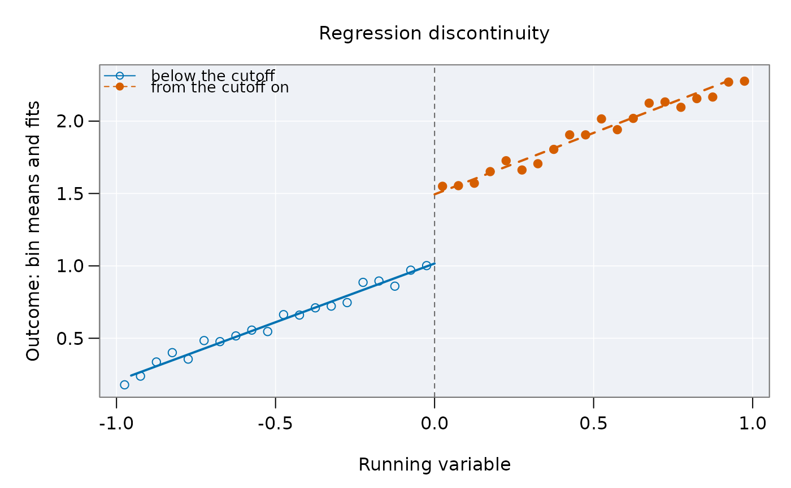

Estimates the jump at a cutoff in a running variable: the outcome's (sharp design) or its ratio to the jump in the treatment (fuzzy design), by local-linear fits on either side with kernel weights, with the bandwidth of Imbens and Kalyanaraman (2012) or one given, conventional and robust intervals, clustered errors and placebo cutoffs. Carrillo, Lopez-Luzuriaga and Malik (2018, equation 6, p. 8) use the sharp design in space: crime counts by distance to a restriction border, a line on each side, within a window.
Usage
rdloc(
data,
y,
run,
cut = 0,
trt = NULL,
bw = c("ik", "user"),
h = NULL,
kern = c("tri", "uni", "epa"),
ci = c("robust", "conventional"),
se = c("hc1", "cluster"),
clus = NULL,
ssc = c("G", "none"),
plac = NULL,
level = 0.95
)
# S3 method for class 'rdloc'
print(x, ...)
# S3 method for class 'rdloc'
summary(object, ...)
# S3 method for class 'rdloc'
plot(x, ..., main = NULL, col = NULL, pal = NULL)Arguments
- data
A data frame.
- y
The name of the outcome column.
- run
The name of the running-variable column.
- cut
The cutoff (treated from
cuton).- trt
NULL(sharp) or the name of the treatment column (fuzzy).- bw
"ik"or"user".- h
The bandwidth, for
bw = "user".- kern
"tri","uni"or"epa".- ci
"robust"or"conventional": the interval named first.- se
"hc1"or"cluster".- clus
The name of the cluster column, for
se = "cluster".- ssc
"G"or"none".- plac
NULLor false cutoffs, none equal tocut.- level
The confidence level.
- x
An object of class
rdloc.- ...
Not used by
print()andsummary(); forplot(), passed to the base-graphics call.- object
An object of class
rdloc.- main
NULL(a default title) or one string.- col
NULL(the palette) or colours.- pal
NULL(the session palette, seeplotopt()) or a palette name forblpal().
Value
An object of class rdloc, a list: coef, two rows (method,
est, se, stat, p, lo, hi), the one of ci first; h;
n, nl, nr, the rows within the bandwidth (all, left, right);
ncl; ik, the steps of the bandwidth (h1, f, vl, vr, m3,
h2l, h2r, m2l, m2r, ck; NULL for "user"); placebo
(cut, est, se, p, n; NULL without plac); cut, kern,
fuzzy, se, level. summary() returns coef.
The attribute "plt" of the result holds what plot() draws:
bins, the outcome's means in 20 equal bins of the running variable
on each side (x the midpoint, y, n, side), and fit, the
ends of the local-linear line of each side over the rows within the
bandwidth, with the kernel's weights (x, y, side).
Details
The fit. With r the running variable less cut and D = 1(r >= 0),
weighted least squares of y on 1, D, r, D r with weights K(r / h); the coefficient of D is the jump, the difference of the two
local-linear intercepts. Fuzzy (trt given): two-stage least squares
of y on the treatment, instrumented by D, with 1, r, D r and the
same weights, which is the ratio of the jumps in y and in the
treatment. Kernels (kern, each on [-1, 1]): "tri" (the default,
1 - |u|, the edge kernel Imbens and Kalyanaraman recommend, p. 941),
"uni" (a constant: a plain window, as Carrillo et al.), "epa"
(3/4 (1 - u^2)).
The bandwidth (bw): "ik" (the default), the algorithm of Imbens and
Kalyanaraman (2012, section 4.2, steps 1-3, equations 11-17, p.
941-943) for the outcome: a pilot h1 = 1.84 S_X N^(-1/5) for the
density and the variances at the cutoff, a cubic with a jump for the
third derivative, local quadratics within h2 for the second
derivatives, the regularisation terms 2160 sigma^2 / (N2 h2^4), and h = C_K ((sigma-^2 + sigma+^2) / (f (dm^2 + r+ + r-)))^(1/5) N^(-1/5)
with C_K = (C2 / (4 C1))^(1/5) from the kernel's moments (their Lemma
3.1; 3.4375 for the triangle, 2.70 for the uniform on [-1, 1], which
is their 5.40 for the uniform on [-1/2, 1/2]). For a fuzzy design it
is the outcome's bandwidth, the simplification the paper offers (p.
946); its fuzzy formula (equation 24) is not built, as the paper does
not say at which bandwidth its preliminary tau is estimated. "user":
the bandwidth h. The selector of Calonico, Cattaneo and Titiunik
(2014, section 4) is not built.
Intervals (ci): both are returned in coef, the one named first.
"robust" (the default): Calonico, Cattaneo and Titiunik (2014) bias-
correct the local-linear estimate with a local-quadratic one at a pilot
bandwidth b and widen the variance accordingly; with b = h the
bias-corrected estimate is the local-quadratic estimate and its robust
variance is that estimate's variance (their Remark 7, p. 2305), which
is what is computed: the row "robust" gives the local-quadratic
estimate, its standard error and interval (b != h is not built).
"conventional": the local-linear estimate with its own standard
error, which ignores the smoothing bias. Standard errors (se) from
the rows' scores: "hc1", heteroskedasticity-robust, or "cluster"
by clus; ssc = "G" multiplies by G / (G - 1) (G the clusters or
the rows), "none" does not. The normal gives the intervals.
Placebo cutoffs (plac): at each false cutoff the same sharp fit of
y (the same h and kernel, conventional errors) on the rows of that
side of the true cutoff only, so that the true jump cannot enter; jumps
found there speak against the design. For the density of the running
variable at the cutoff see rddens().
plot() draws the binned means and the local-linear line of
each side, whose gap at the cutoff is the conventional estimate of a
sharp design (for a fuzzy one, the jump in the outcome, the numerator
of the ratio), and with plac the jump at each placebo cutoff with
its normal interval; it returns a list of what it drew (bins,
fit, placebo).
References
Imbens, G. and Kalyanaraman, K. (2012). Optimal bandwidth choice for the regression discontinuity estimator. Review of Economic Studies, 79(3), 933-959. doi:10.1093/restud/rdr043
Calonico, S., Cattaneo, M. D. and Titiunik, R. (2014). Robust nonparametric confidence intervals for regression-discontinuity designs. Econometrica, 82(6), 2295-2326. doi:10.3982/ECTA11757
Carrillo, P. E., Lopez-Luzuriaga, A. and Malik, A. S. (2018). Pollution or crime: the effect of driving restrictions on criminal activity. Journal of Public Economics, 164, 50-69. doi:10.1016/j.jpubeco.2018.05.007
Examples
set.seed(5)
d <- data.frame(r = runif(2000, -1, 1))
d$y <- 1 + 0.8 * d$r + 0.5 * (d$r >= 0) + rnorm(2000, 0, 0.3)
f <- rdloc(d, "y", "r")
f
#> rdloc: sharp regression discontinuity at 0, tri kernel, bandwidth 0.9542 (Imbens-Kalyanaraman); 964 + 947 rows within it
#> method est se stat p lo hi
#> robust 0.4699 0.04637 10.13 3.931e-24 0.3790 0.5608
#> conventional 0.4777 0.03129 15.26 1.326e-52 0.4163 0.5390
plot(f)

# a given bandwidth, the uniform kernel and two placebo cutoffs
summary(rdloc(d, "y", "r", bw = "user", h = 0.3, kern = "uni",
plac = c(-0.5, 0.5)))
#> method est se stat p lo hi
#> 1 robust 0.5041150 0.07625604 6.610821 3.821953e-11 0.3546559 0.6535741
#> 2 conventional 0.4957812 0.05126063 9.671775 3.974255e-22 0.3953122 0.5962502
# fuzzy: treatment taken up more often above the cutoff
d$t <- as.numeric(runif(2000) < 0.2 + 0.6 * (d$r >= 0))
d$y2 <- 1 + 0.8 * d$r + 0.7 * d$t + rnorm(2000, 0, 0.3)
rdloc(d, "y2", "r", trt = "t")$coef
#> method est se stat p lo hi
#> 1 robust 0.7215609 0.07361641 9.801631 1.107817e-22 0.5772754 0.8658464
#> 2 conventional 0.7069529 0.04952302 14.275239 3.122150e-46 0.6098896 0.8040162